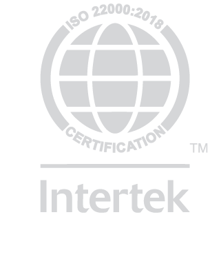

Balai Sidang Jakarta Convention Center was built in 1960 and completed in 1974 for the opening ceremony of the 23rd annual Pacific Asia Travel Association (PATA) conference held in early April 1974. This conference was a major event for Jakarta and several major hotel projects, such as the expansion of Hotel Indonesia, Hotel Borobudur, Hotel Ambassador (now Hotel Aryaduta), and Hotel Sahid Jaya, is also targeted to be completed before the PATA conference starts.
Since then, JCC has become one of the largest convention centers in Indonesia which is widely used as a host for a number of national and international class events. One of the Jakarta Convention Center Convention Centers was used in the 10th Non-Aligned Movement Summit Meeting in 1992. Prior to the Non-Aligned Summit, the Convention Hall was completely renovated, and the building was then used for conferences by 62 heads of state and delegates from 109 countries.
The major renovation of the Jakarta Convention Center Convention Center was completed in August 1992 and inaugurated by the President of the Republic of Indonesia, Suharto, on August 25, 1992 which was later named the Jakarta Hilton Convention Center (JHCC). This is because the ownership and management are still under the same management as Jakarta Hilton International, which manages the Jakarta Hilton Hotel.
Based on government regulations calling for the naming of buildings or companies to use Indonesian, then in 1995, the Jakarta Convention Center changed its name again to Balai Sidang Jakarta Convention Center under the ownership and management of PT. Graha Primary Assembly. Starting January 1, 2006, the management of the Jakarta Convention Center Convention Center is under the Management of Singgasana Hotels & Resorts.
Balai Sidang Jakarta Convention Center has CHSE standards certification
Balai Sidang Jakarta Convention Center is proud to announce that we have passed an in-depth set of assessments to achieve the honor of ISO 22000-2018.The implementation of ISO 22000-2018 allows us to constantly improve our quality management systems and the processes of our organization. This certification shows that we are truly committed to the quality of our ingredients, as part of our business culture and philosophy.
